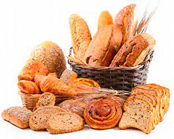
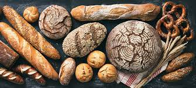
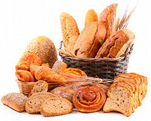
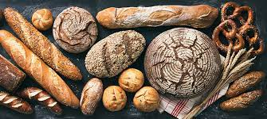

VIGILANTES
Los preparamos con harina 000, sal entrefina, margarina, huevo, leche en polvo, azucar, escencia
de vainilla, escencia de manteca y escencia de limón para el aroma.
Primero mezclamos la margarina con azucar, huevo y las esencias, luego agregamos harina hasta
que queda maleable, una
vez lista estiramos y se le pasa un poco de margarina por encima, espolvoreamos harina y
levadura (segun los kg la cantidad de gramos) luego amasamos hasta que la masa quede lisa,
estiraramos hasta 1 cm de grosor.
Una vez completados los pasos anteriores cortamos la masa en
forma de triángulo, sobre la base del triángulo ponemos un poco de dulce de membrillo y
enrrollamos sobre si mismo.
Lo ponemos en una bandeja con grasa y harina para evitar que se
pegue, lo dejamos leudar durante toda la noche y por la mañana a primera hora lo cocinamos
apróximandamente una hora a temperatura media, luego agregamos maicena y chocolate derretido
para decorar y listo, ya podés pasar por tu desayuno o merienda.